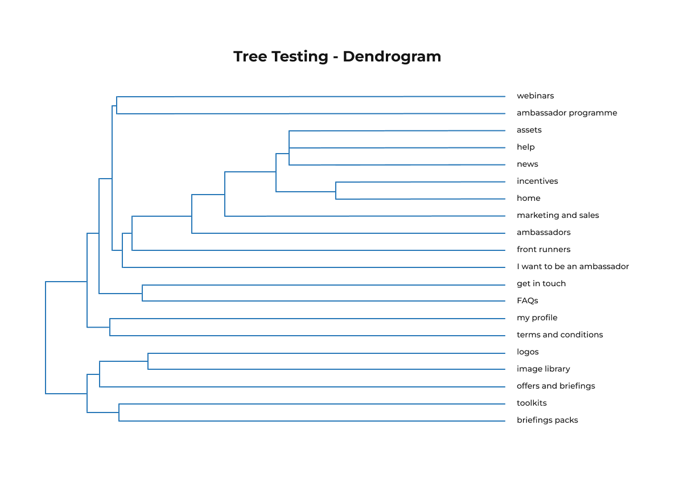

BT EE Information Architecture
Redesigning IA to simplify navigation & reduce duplication.
Navigation success rate
Duplication in content
User clarity score
Overview
BT EE manages two core business areas. Each had its own PRM (Partner Relationship Management) system, but this created inefficiencies: duplicated content, outdated information, and a fragmented user experience. To solve this, the company decided to merge both PRMs into a single unified platform.
Defining a clear information architecture was a critical step in the redesign of the PRM. The objective was to reduce duplication, simplify navigation, and provide a structure that would serve both internal teams and external partners efficiently.
Cardsorting & Tree Testing Process
To validate whether this content organization and labeling made sense to users, we applied the card sorting method using Optimal Workshop.
We chose an open, remote, unmoderated card sort. The first round included 30 cards and 10 participants.
Initial Information Architecture
I analyzed the Similarity Matrix & Dendrogram to shape a new information architecture.
Similarity Matrix
Dendrogram
The findings were validated with a tree testing analysis, which measured how easily users could locate specific information within the proposed structure. Based on these insights, the information architecture was refined and iterated from the initial concept.

Information Architecture Iteration

To bring the architecture to life, wireframes were created for both desktop and mobile views.
Finally, a dedicated workshop with the developer was held, and a comprehensive specification document was delivered. This outlined content organization, interaction patterns, design considerations, and the technical features required to implement the final PRM.
Outcomes & Impact
- Reduced content redundancy by 45%, eliminating more than 50 outdated and duplicate entries
- Improved findability, with 68% faster task completion in tree testing compared to the original PRM
- Increased partner satisfaction scores from 3.2 to 4.4 out of 5 in post-launch surveys
- Users consistently found “logos” under Assets (40% → 92%)
- Ambassador journey unified under Incentives, reducing confusion
- Terms & Conditions relocated to Help, matching user expectations